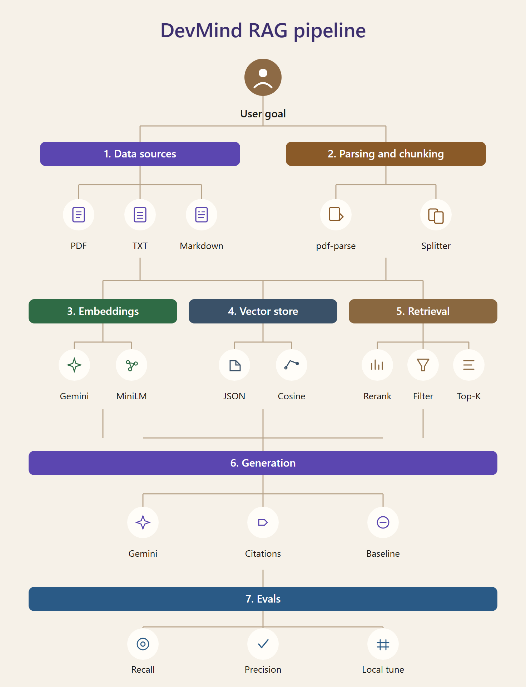

PROJECT DOCUMENTATION
DevMind
A Document Question-Answering System Using Retrieval-Augmented Generation
DevMind is a full-stack natural language processing application for question answering over a user’s own files. A person uploads a PDF, plain-text file, or Markdown file, asks a question in a chat, and receives an answer written from the passages that the system retrieved from that file. Matching passages are shown beside the chat so the answer can be checked against the source.
The design follows retrieval-augmented generation. Search, storage, chunking, reranking, and scoring run on the machine that hosts the application. Google Gemini writes the answer and, when it is available, also builds the embedding vectors used for search. If the embedding call fails, a local MiniLM model creates the vectors instead. A separate baseline mode asks the same language model with no passages attached, so the effect of retrieval can be compared with an ungrounded answer. A Compare page measures recall and precision of a local retrieval check and can choose a top-K setting from those scores. That check does not call Gemini.
This report describes the problem the project addresses, the ideas it depends on, the requirements, the architecture, and the implementation of each module. It also records the HTTP interface, the setup procedure, the evaluation method, the limits of the current system, and the work that would extend it. The description matches the source code in the DevMind repository: a React and Vite client, a Node.js and Express server, and JSON files used as the document, vector, and conversation store.
Large language models can write fluent answers to open questions. Their knowledge is the knowledge captured during training, and they have no automatic access to a PDF that a student, researcher, or developer uploaded a minute earlier. When the needed fact lives only in that file, an answer written from model memory alone can be incomplete or simply wrong. The usual remedy is to retrieve relevant text first and then ask the model to write from that text. This pattern is called retrieval-augmented generation, or RAG.
DevMind applies that pattern to a small, local document library. The library is not the open web. It is the set of files the user has uploaded in the current installation. The application extracts text, splits it into overlapping passages, turns each passage into a vector, and stores the vectors in JSON files. At question time it embeds the question, finds the nearest passages, reorders them with a word-overlap score, and sends the best few passages to Gemini together with a short instruction to cite them. The interface keeps the conversation, shows the passages, and offers a baseline call that omits the passages.
The project sits at the meeting point of information retrieval and generation. Retrieval decides which sentences are worth reading. Generation turns those sentences into a direct answer. DevMind keeps both steps visible: the answer is in the chat, and the passages that supported the search are in a side panel. A third view, Compare, states the practical difference between a grounded answer and an ungrounded one, and it runs a local retrieval check whose token cost is zero.
People who work from long documents need answers that stay inside those documents. Reading a full PDF for every small question is slow. Pasting the whole file into a chat window is often impossible, because models accept a limited amount of text, and a long paste also mixes the question with pages that are irrelevant. A useful tool has to select a short, relevant context, answer from it, and show where the wording came from.
The problem addressed by DevMind is therefore: given one or more uploaded documents and a natural-language question, return a concise answer grounded in those documents, together with the passages used, and allow the same question to be asked again with no documents so the two behaviours can be compared. The system must also remember the chat, support a follow-up that depends on earlier turns, and keep working in a reduced way when the hosted model cannot be reached.
The project was built to meet the following objectives.
DevMind is a single-user application that runs on localhost. It indexes the files uploaded to that installation. It does not crawl the web, it does not require an account, and it does not use a separate database server. Authentication, multi-user permissions, and cloud deployment are outside the present scope. The language model is Gemini, reached with one API key stored in backend/.env. Embeddings prefer the same provider and fall back to Xenova/all-MiniLM-L6-v2 on the server. Evaluation covers retrieval against passages drawn from the uploaded files. It does not call Gemini and it does not claim a score for answer quality.
Supported inputs are PDF files read with pdf-parse, and UTF-8 text or Markdown. Scanned pages that contain no extractable text are outside the current extractor. Upload size is limited to 12 megabytes. The interface is a React application served in development by Vite on port 5174, with the API on port 4000.
Chapter 2 reviews the ideas the system uses: grounded question answering, RAG, embeddings, cosine similarity, chunking, lexical reranking, and the retrieval metrics. Chapter 3 lists requirements. Chapter 4 describes the architecture, the pipeline, the stack, and the files on disk. Chapter 5 walks through the implementation module by module. Chapter 6 lists the HTTP API. Chapter 7 explains the evaluation and the local tuner. Chapter 8 gives installation steps and a demonstration script. Chapter 9 discusses design choices, limits, and future work. Chapter 10 concludes. Two appendices record the repository layout and the default numeric parameters.
Question answering is the task of returning a direct answer to a question written in natural language. Early systems looked up a passage and extracted a span from it. Generative systems write a new sentence. Generation is flexible, and it is also free to introduce statements that were never in the source. Grounding is the requirement that the answer stay tied to evidence the system can show. In DevMind that evidence is a small set of passages from the user’s files, labelled Source 1, Source 2, and so on, both inside the model instruction and in the citations panel.
A grounded system still depends on the retriever. If the right passage is missing from the context, the model is instructed to say that the documents do not contain the answer. That instruction reduces silent invention, and it only works when the prompt actually contains the instruction and the retrieved text. DevMind puts both into the system instruction for RAG mode. Baseline mode uses a shorter instruction and sends no document context, which is the behaviour expected of a general chat model.
Lewis and colleagues introduced retrieval-augmented generation as a way to give a generator access to a non-parametric memory: a collection of documents retrieved at question time, rather than facts stored only in model weights. The generator conditions on the retrieved text. Updating the collection updates what the system can answer, without retraining the model. That property matches a document tool. The user adds a PDF, and the next question can use it.
A practical RAG pipeline has a preparation stage and a query stage. Preparation parses the file, splits the text, embeds the pieces, and stores them. The query stage embeds the question, searches, optionally reranks, builds a context string, and calls the generator. DevMind follows this split. Ingestion is triggered by POST /api/documents. Answering is triggered by a chat message or by POST /api/ask. Evaluation is a third path that never enters the generator.
Surveys of RAG systems describe the same stages with extra options DevMind deliberately leaves out: query rewriting by another model call, multi-hop retrieval, and a second model used only as a reranker. DevMind keeps one model call for the answer. Reranking is a local formula over word overlap. The aim is a pipeline that can be explained from the source file that implements it, and that still returns a usable answer on a student machine.
An embedding maps a piece of text to a list of numbers. Texts with similar meaning land closer together than unrelated texts, when the embedding model has been trained for that. DevMind uses gemini-embedding-001 when the API key works. The fallback is MiniLM through the Transformers.js package, model name Xenova/all-MiniLM-L6-v2, with mean pooling and normalisation. MiniLM is a distilled transformer used widely for sentence embeddings. The two models do not produce compatible coordinates. The store therefore compares a query vector only with passage vectors of the same length, and files should be uploaded again after the embedding model changes.
Closeness is cosine similarity. For vectors a and b the score is the dot product divided by the product of the Euclidean norms:
cos(a, b) = (a · b) / (‖a‖ ‖b‖)
The implementation adds a tiny constant in the denominator so a zero vector cannot divide by zero. Higher cosine means a closer direction. The search sorts passages by this score and keeps a candidate pool, twelve by default, before reranking. Cosine is the dense half of retrieval. It can match a paraphrase that shares few exact words with the question. It can also rank a vaguely related passage above the sentence that actually contains the fact. The lexical reranker exists to pull exact wording back up.
A full document is a poor unit of retrieval. A question is usually answered by a paragraph, and a vector of an entire chapter mixes many topics into one point. DevMind splits extracted text with LangChain’s RecursiveCharacterTextSplitter. The chunk size is about 900 characters and the overlap is 150 characters. Overlap keeps a sentence that sits on a boundary inside both neighbouring passages, so a fact is less likely to be cut in half and then missed.
The splitter prefers natural breaks, such as paragraphs and sentences, and falls back to smaller breaks when a region is longer than the limit. After parsing, DevMind collapses runs of whitespace to a single space. That makes PDF line breaks easier to embed, and it also removes the visual line structure of the original page. Page numbers and headings survive only as the characters the extractor returned. If the cleaned text is shorter than 30 characters, ingestion stops with an error, because there is nothing useful to index.
Dense retrieval and word overlap answer different failures. Cosine can miss a rare name that the embedding underweights. Overlap can miss a paraphrase that uses none of the query words. DevMind combines them at rerank time. Content words are the tokens that remain after lowercasing, stripping characters other than letters and digits, dropping tokens of length two or less, and dropping a small stop list: a, an, the, of, to, and, in, on, for, with, from, by, is, are, was, were, be, this, that, it, as, at, or, you, your, we, our.
The lexical score of a passage is the fraction of query content words that also appear in the passage. The reranked score mixes that fraction with the cosine score already stored on the candidate:
score = (1 − λ) · cosine + λ · lexical
The default λ, stored as lexicalWeight, is 0.35. Cosine therefore still dominates, and shared words can change the order inside the candidate pool. The pool is the top 12 by cosine. Reranking does not look outside that pool. After reranking, the top 4 passages are kept, unless the user has tuned a different top-K.
Recall, in this project, is the fraction of test questions for which the passage that produced the question appears in the top-K results. Precision is the average, over questions, of the fraction of the top-K results that count as relevant. A result counts as relevant when it is the source passage, or when its word overlap with the question is at least one half. F1 is the harmonic mean of recall and precision:
F1 = 2 · recall · precision / (recall + precision)
When both scores are zero, F1 is defined as zero. These definitions are implemented in backend/src/rag/eval.js and are the scores shown on the Compare page. They describe the local ranker used by the check. They are a development signal for top-K and λ. Chapter 7 explains why they should be read as a retrieval diagnostic and not as a mark for the written answers.
The intended user is a person with a document and a question about it: a student checking a handout, a developer reading a specification, or anyone comparing what a model says from memory with what the file actually contains. The user works in a browser. There is no login. The library, the chats, and the retrieval settings belong to the machine where the server is running, because they are ordinary files under backend/data/.
Three screens cover the usage. Library is where files enter and leave. Chat is where questions are asked, with a switch between RAG and Baseline and a menu that limits search to one document. Compare explains the two modes and runs the retrieval check and the tuner. The sidebar lists earlier chats and can start, open, rename, pin, or delete one.
| ID | Requirement |
|---|---|
| F1 | Upload one or more PDF, TXT, or Markdown files and index them into passages with embeddings. |
| F2 | List indexed files with passage count, character count, and upload time, and delete a file together with its vectors. |
| F3 | Ask a question in RAG mode and receive an answer written from retrieved passages, with citations of the form [Source n]. |
| F4 | Ask the same question in Baseline mode with no passages attached. |
| F5 | Show the retrieved excerpts beside the conversation. |
| F6 | Keep a conversation across turns, and use recent user turns when forming the retrieval query. |
| F7 | Create, list, rename, pin, and delete conversations. |
| F8 | Restrict retrieval to a chosen document, or to a document whose file name appears in the question. |
| F9 | Trim history and passages so the model request stays within a fixed character budget. |
| F10 | If Gemini cannot be called, return a short extractive fallback built from the retrieved passages. |
| F11 | Compute recall and precision locally, and save the top-K and lexical weight that maximise F1 on that check. |
GEMINI_API_KEY. It is read from the environment at startup and is not written into the source tree. The .env file is gitignored.backend/src/rag/, so a reader can move from the pipeline diagram to the file that implements the stage.
The generator and the preferred embedder are hosted services, so a normal written answer needs a network path to Gemini and a valid key. The fallback embedder downloads its weights the first time it runs. PDF text comes from the text layer of the file; a scan without that layer will fail the minimum-length check or index almost nothing. Vectors are stored as JSON numbers, which is simple and, for a very large library, heavier than a dedicated vector index. The CORS policy allows the development origins http://localhost:5174 and http://127.0.0.1:5174. The server listens on all interfaces at the configured port, which defaults to 4000.
DevMind is a two-process web application. The client is a React single-page application. In development, Vite serves it and proxies every request that starts with /api to the Express server. The server owns ingestion, retrieval, generation, evaluation, and the JSON store. The browser never holds the API key and never computes embeddings. When a production build of the client exists at frontend/dist, the same Express process serves that build and falls back to index.html for client-side routes, while leaving /api paths on the API.
A question travels through a narrow function, askQuestion, in pipeline.js. Chat mode loads the conversation, sends the question with the chosen mode and optional document id, and appends the user turn and the assistant turn to the conversation file. The one-off route POST /api/ask calls the same function and does not save a chat. This keeps the answering policy in one place.
Figure 1 is the pipeline used by the project. A question starts from the user and draws on seven stages. Data sources are the uploaded PDF, TXT, and Markdown files. Parsing and chunking use pdf-parse and the text splitter. Embeddings are produced by Gemini or by MiniLM. The vector store writes JSON and searches with cosine similarity. Retrieval reranks, can filter to one document, and applies top-K. Generation calls Gemini, asks for citations, and can run a baseline with no passages. Evals compute recall and precision and can tune the local settings. The evaluation stage does not call Gemini.

The stages are not seven separate network services. They are functions in one Node process. The diagram is a map of data flow. Ingestion covers stages 1 to 4. A RAG question covers embedding the query, search, rerank, trimming, and generation. A baseline question skips search and sends only the question and recent chat. The Compare actions cover stage 7 only.
| Layer | Choice | Role in DevMind |
|---|---|---|
| Frontend | React 19, Vite 6, Tailwind CSS 4 | Chat, Library, Compare, sidebar, citations |
| Markdown | react-markdown | Renders assistant answers that contain Markdown |
| Backend | Node.js, Express 4 | HTTP API and static hosting of the production build |
| Uploads | Multer, memory storage | Receives the file in memory, limit 12 MB |
| PDF text | pdf-parse | Extracts the text layer of a PDF |
| Splitting | @langchain/textsplitters | Recursive character chunks of 900 with overlap 150 |
| LLM and embeddings | @google/genai | Gemini chat models and gemini-embedding-001 |
| Local embeddings | @xenova/transformers | MiniLM fallback when Gemini embeddings fail |
| Identifiers | uuid | Document ids and conversation ids |
| Storage | JSON files | Documents, vectors, chats, retrieval settings |
All generated state lives under backend/data/, which is created on demand. Four files matter.
| File | Contents |
|---|---|
| documents.json | One object per file: id, original name, upload time, chunk count, character count. Pretty-printed. |
| vectors.json | One object per passage: document id and name, upload time, chunk index, text, character count, and the embedding array. Written compactly because the arrays are large. |
| conversations.json | Chats with title, pin state, timestamps, and messages. Assistant messages store sources, mode, and latency. |
| retrieval.json | candidateCount, topK, and lexicalWeight. Missing file means the built-in defaults. |
Deleting a document filters both arrays and writes them back. There is no separate vector index to rebuild. The cost is that every search reads the vector file. For a project library of course notes and a few papers, that cost is acceptable and the format stays inspectable in an editor.
| Module | Responsibility |
|---|---|
| backend/src/index.js | Express routes, CORS, upload middleware, static client |
| backend/src/loadEnv.js | Reads backend/.env into process.env without overriding existing variables |
| backend/src/rag/pipeline.js | Ingest, ask, context string, document filter, fallback answers |
| backend/src/rag/embeddings.js | Gemini embeddings with MiniLM fallback and mean pooling |
| backend/src/rag/gemini.js | Client, model list, retries, embed and generate calls |
| backend/src/rag/store.js | Load, save, cosine search, delete, counts |
| backend/src/rag/rerank.js | Content words, lexical score, phrase score, rerank |
| backend/src/rag/context.js | Token estimate and trimming of history and sources |
| backend/src/rag/eval.js | Gold questions, recall, precision, F1 grid search |
| backend/src/rag/retrievalSettings.js | Read and write retrieval.json |
| backend/src/rag/conversations.js | Chat list, create, append, rename, pin, delete |
| frontend/src/App.jsx | Screens, chat state, upload, evaluation buttons |
| frontend/src/api.js | Fetch wrappers for every API route |
The process starts by importing loadEnv.js, which parses backend/.env if the file exists. Blank lines and lines starting with # are ignored. A value may be wrapped in single or double quotes. A variable already present in the environment is left unchanged, so a shell export wins over the file. The server then builds an Express application, enables JSON bodies, and allows the Vite origins. Multer stores the upload in memory with a 12 MB limit. The listen address is 0.0.0.0 and the port is PORT or 4000. On startup the log prints whether the Gemini key is missing, an AI Studio key, a standard key, or some other format. The key itself is not printed.
ingestFile receives the original file name, the buffer, and the MIME type. A PDF, recognised by MIME type or by a .pdf suffix, is passed to pdf-parse. Any other file is decoded as UTF-8, which covers TXT and Markdown. Whitespace is collapsed and the ends are trimmed. Text shorter than 30 characters raises “Could not extract enough text from this file.” The remaining string is split. Each chunk is embedded in order and stored with its index. The document id is a UUID. The returned metadata contains the id, name, upload time in ISO form, chunk count, and character count. The client lists those fields in Library.
Embedding happens during upload, not during the first question. A large file therefore takes longer to index, and a later question only embeds the query. Chunks are embedded one after another. That keeps the implementation straightforward and respects a provider that expects a single text per call. The passage text stored beside the vector is the chunk itself, so the citations panel can show the words that were searched, not a second summary.
embedText prefers Gemini whenever a key is set. geminiEmbed calls embedContent on gemini-embedding-001 and reads response.embeddings[0].values. An empty vector is treated as failure. On failure, or when no key is set, embedLocal runs. The local pipeline is created once and reused. It requests mean pooling and normalisation. The helper meanPool averages token rows if the raw tensor is still token-wise, which keeps the result a single vector. The console records the fallback so an operator can see that the model changed.
Because the two embedders differ, mixed vectors would make cosine meaningless. searchSimilar drops any stored vector whose length differs from the query vector. After a lasting change of embedder, the practical step is to delete the affected documents and upload them again so every passage shares one space. The report states this as an operational rule rather than a silent conversion, because the code does not re-embed old files automatically.
loadStore reads the two JSON files and returns empty arrays if they are missing. addDocument places the new document at the front of the list and appends one vector record per chunk, copying the document id, name, and upload time onto each record. persist writes documents with indentation and vectors without, then both files replace the previous contents. A crash during the write could leave a partial file; the project accepts that risk in exchange for a dependency-free store.
searchSimilar loads the store, applies the document filter, and returns an empty list if the pool or the query vector is empty. Each surviving vector receives a cosine score. The list is sorted descending and cut to the candidate count. stats returns the document count and the chunk count used by the health endpoint and the sidebar.
The cosine function is a single loop over the shared index range. It accumulates the dot product and the two squared norms, then divides. This is the standard definition from the vector-space model used in information retrieval since the work of Salton and others. No approximate nearest-neighbour structure is used. Exact scan is the right tool while the collection is the user’s own uploads.
In RAG mode, askQuestion loads documents and the saved retrieval settings. The document filter checks an explicit docId from the request first. The Chat screen sends the id chosen in the “Search in” menu, or an empty string for all documents. If no id was sent, the filter looks for a file-name stem longer than three characters that appears, in lower case, inside the question. A question that names lecture-3.pdf by its stem can therefore narrow itself. Otherwise every document remains eligible.
Follow-up questions are often short: “what about the second method?” On their own they embed poorly. DevMind builds the retrieval query from the last two user messages plus the current question, joined and cut at 1200 characters. That query is embedded and searched. The candidate list is reranked with the same query text, the configured top-K, and the configured lexical weight. trimSources may drop passages that would overflow the context budget. Baseline mode leaves the source list empty and does not embed the question for search.
Reranking recomputes the score as a weighted sum of the stored cosine and the lexical fraction, sorts again, and slices to top-K. The lexical value is also stored on the object, rounded to four decimal places, for inspection. The default candidate count stays 12 even after tuning. The tuner writes top-K and lexical weight only.
The context block is a join of the kept passages. Each block is labelled with a source number, the file name, the chunk index starting at one, and the score to three decimal places, followed by the passage text. Blocks are separated by a horizontal rule. This is the text the model is told to treat as CONTEXT.
RAG mode uses a system instruction that names DevMind as a document-grounded assistant, tells it to use the retrieved context and the earlier chat, tells it to say when the documents do not contain the answer, and tells it to cite sources inline as [Source 1] and [Source 2]. Baseline mode asks for a clear, concise answer and mentions follow-up turns, and it attaches no context. Both calls pass the trimmed history.
geminiGenerate maps history roles to the API’s user and model roles, keeps at most eight turns, and appends the current user text. Temperature is 0.2, which favours stable wording over wide variation. The HTTP timeout on the call is 20 seconds. Models are tried in order: gemini-3.5-flash, gemini-3.1-flash-lite, gemini-flash-lite-latest, and gemini-3.8-flash. A failure whose message indicates overload (HTTP 503, unavailable, or high demand) is retried once after 1.5 seconds. Any other failure moves to the next model. If every model fails, the error propagates to the pipeline, which catches it and builds a fallback answer.
The fallback depends on mode. Baseline fallback states that Gemini could not be reached and that the caller should retry. RAG fallback with an empty library tells the user to upload files. When passages exist, a question that looks like a request for a summary or a list becomes up to three numbered sentences, each cut at the first sentence boundary or at about 180 characters, each marked with a source number. Other questions become up to two highlighted excerpts. The reply says that the wording is retrieval-based and that a later try can produce a fluent answer. Returned sources always include the file name, chunk index, score to four decimal places, and an excerpt of at most 280 characters. Latency is the wall time from the start of askQuestion to the return, in milliseconds. The response also includes the mode and, when a document filter matched, the file name.
A new conversation has a UUID, the title “New chat”, pin flags cleared, and an empty message list. The first user question replaces that title with the first 48 characters of the question, unless the user has already renamed it. Each turn appends a user message and an assistant message. The assistant message keeps the answer text, the sources, the mode, the latency, and a timestamp. Listing chats returns a summary: id, title, update time, pin state, message count, and a preview taken from the first user message, cut at 80 characters. Pinned chats sort first, by pin time, and the rest sort by update time.
Rename writes a trimmed title of at most 80 characters. Pin sets or clears pinned and records pinnedAt. Delete removes the conversation object. These operations are the sidebar actions. The client loads a full conversation when a row is opened and replaces the message pane with that transcript, including the stored sources so the citations panel can reopen.
estimateTokens treats four characters as one token. That is a rough English estimate used only for budgeting, not for billing. History is walked from the newest turn backward until the next turn would pass 700 estimated tokens. The kept list is then limited to eight messages. Sources are walked from the highest-ranked passage forward until the next passage would pass 1800 estimated tokens. At least one history item and one source are kept when any exist, so a single long passage is not discarded solely because it exceeds the budget. Dropped counts are computed and returned by the helpers. The pipeline uses the trimmed lists.
The budgets exist so a long chat and a generous top-K cannot silently grow the Gemini request without bound. They also make latency more predictable. A reader who changes top-K on the Compare page should remember that trimming may still withhold the last passages if they do not fit.
The client is one React tree in App.jsx, with small components for the sidebar, a chat bubble, the citations panel, and the DevMind mark and avatar. On load it requests health, the document list, and the conversation list. Failure sets an offline message that tells the operator to start the backend. The welcome message explains Library and follow-up chats. Sending a question creates a conversation if none is active, then posts the message. The transcript is replaced with the saved conversation so the client and the file stay aligned.
The composer is a textarea. Enter sends, and Shift+Enter inserts a line. The placeholder changes with the mode. RAG and Baseline are a segmented control. The document menu lists every indexed file plus “All documents”. Library is a drop zone and a file picker that accepts .pdf, .txt, and .md, including several files in one drop. Each file is uploaded in sequence. A card shows the name, passage count, character count, and date, with a remove button. Compare shows a four-row contrast of context, citations, best use, and hallucination risk, then two buttons: Check retrieval and Tune locally. Results print recall and precision as percentages, the question count, and a note of zero tokens. After tuning, the chosen top-K is shown as well.
Citations render only on the chat screen, and only when the latest assistant turn that has sources is non-empty. Answers go through a Markdown renderer, so lists and emphasis returned by the model display as formatted text. The layout is a dark interface, full viewport height, with a collapsible navigation region on small screens.
All routes live under /api. Successful uploads and new chats use HTTP 201. A missing chat or a missing question uses 404 or 400. Failures include an error string. The chat message body is JSON with question, mode (rag or baseline), and an optional docId.
| Method | Path | Purpose |
|---|---|---|
| GET | /api/health | Status plus document and passage counts |
| GET | /api/documents | List indexed files |
| POST | /api/documents | Upload a file, multipart field name file |
| DELETE | /api/documents/:id | Remove a file and its vectors |
| GET | /api/conversations | List chats |
| POST | /api/conversations | Start a chat |
| GET | /api/conversations/:id | Load one chat |
| PATCH | /api/conversations/:id | Rename or pin |
| DELETE | /api/conversations/:id | Delete a chat |
| POST | /api/conversations/:id/messages | Ask inside a chat |
| POST | /api/eval | Local recall and precision |
| POST | /api/optimize | Choose top-K and lexical weight from local scores |
| POST | /api/ask | One-off question, no saved chat |
POST /api/ask refuses to run when GEMINI_API_KEY is unset. The chat route does not have that early refusal: askQuestion can still return the extractive fallback. POST /api/eval returns HTTP 400 when no passage yields a question, with the message “Upload a document before checking retrieval.” The optimize route returns the same kind of message when the library is empty. Health always answers, including when the library is empty, so the client can tell a quiet library from a stopped server.
An answer payload contains answer, mode, latencyMs, filter (a file name or null), and sources. Each source has docName, chunkIndex, score, and excerpt. The chat route also returns the updated conversation. The eval payload contains questions, recall, precision, per-question rows, topK, lexicalWeight, and tokenCost set to 0. The optimize payload contains the saved settings, the recall and precision of the winning cell, and tokenCost 0.
The Compare page measures retrieval, not the prose of Gemini. Building a fair test of answer quality would need human judgements or a second model, and it would spend tokens. DevMind instead asks a narrower question: if a passage is turned into a short query made from its own words, does a local ranker place that passage in the top results, and how many of those results share its wording? The check reads vectors.json, scores every passage on the machine, and returns. tokenCost is fixed at 0 so the interface can state that the action did not call Gemini.
This is a diagnostic. It uses lexical overlap and a phrase bonus. The live RAG path uses cosine similarity and then a different mix of cosine and overlap. A high score on the check supports the lexical side of ranking and the choice of top-K. It does not, by itself, prove that the embedding search would have retrieved the same passage, and it does not prove that the written answer was correct. Those are separate questions, and the project keeps them separate on purpose.
Every stored chunk is a candidate source. Its content words are computed with the same tokenizer as reranking. Chunks with fewer than six content words are skipped, because they cannot form the fixed query. For the others, the start index is one third of the way through the word list, capped so that six words remain. Those six words, joined by spaces, are the query. The gold item is the pair of document id and chunk index. Using the middle of the passage, rather than the first six words, avoids a query that is only a heading repeated on many chunks.
The method is automatic and reproducible, and it is also easy. The query is made of words that occur in the gold passage, so a pure overlap ranker is well placed to find it. The resulting recall is an upper-leaning view of lexical retrieval. It is still useful for comparing settings against each other, because every setting is scored on the same questions. It would be a weak claim about questions a user types from scratch, which may paraphrase the file. Chapter 9 lists a human question set as future work.
For each question the ranker scores every vector with localRelevance. That function mixes the lexical fraction with a phrase flag. The phrase flag is 1 when the passage contains the first content words of the query, up to four of them, as a contiguous lower-case phrase, and 0 otherwise. With weight λ the local relevance is:
relevance = (1 − λ) · lexical + λ · phrase
The top-K rows of this ranking are the result list. A hit is recorded when the gold chunk is among them. Recall is the number of hits divided by the number of questions. For precision, a result is relevant when it is the gold chunk or when localRelevance with λ set to 0 is at least 0.5. With λ at 0 the phrase term drops out, so the test is “at least half of the query content words appear in the passage.” Precision for one question is the number of relevant results divided by top-K. The reported precision is the mean of those values. Scores are rounded to three decimal places.
optimizeRetrieval builds the same questions and searches a small grid. Lexical weight takes the values 0.2, 0.35, and 0.5. Top-K takes the values 3, 4, and 6. That is nine cells. Each cell produces recall and precision. The cell with the highest F1 is kept. Ties keep the first winner, because a later cell replaces the best only when its F1 is strictly greater. The winner’s top-K and lexical weight are written to retrieval.json. Candidate count remains 12. The next RAG question uses the saved numbers for the cosine candidate pool’s rerank and cut. The response shows the new settings and the recall and precision of the winning cell.
Nine exact scans of the vector list are cheap at the size of a personal library and expensive if the JSON file grows to a very large corpus. The grid is intentionally tiny so a click on “Tune locally” finishes without a model and without a long wait on course-sized uploads. A finer grid, or a grid over chunk size, would belong to a later experiment. Chunk size is fixed in code today and is not part of the saved settings.
Suppose the library yields 40 questions, top-K is 4, 30 questions place the gold chunk in the top 4, and the average fraction of relevant rows is 0.45. The page shows recall 75 percent and precision 45 percent, with 40 questions and 0 tokens. Raising top-K tends to raise recall and can lower precision, because the denominator grows and extra passages are more often off-topic. Raising the lexical weight favours shared words and the phrase bonus over the rest of the local score. The right cell is the one with the best balance under F1, which is what the tuner stores.
Operators should upload the documents they care about before checking. An empty store cannot be scored. After tuning, a RAG question should be asked again so the new top-K is visible in the citations. Baseline questions ignore the setting, because they do not retrieve.
The server needs Node.js 20 or newer. The client needs the same, because Vite runs on Node. A Gemini key is created in Google AI Studio and placed in the environment file. The first local embedding, if it is ever required, needs network access to obtain the MiniLM weights. Afterwards those weights are cached by the transformers runtime. A modern browser is enough for the interface. No database is installed.
Create backend/.env with the key and the port:
GEMINI_API_KEY=your_key_here PORT=4000
The file is read only on the server. It should not be committed. The repository gitignore already excludes .env. There is no OpenAI key, no login provider, and no database password. If the key is omitted, uploads can still be indexed with MiniLM, chat can still return excerpts, and POST /api/ask will refuse until a key is present.
Install and start the API from the backend directory:
cd backend npm install npm start
The development watcher is npm run dev, which restarts Node when source files change. In a second terminal, install and start the client:
cd frontend npm install npm run dev
Open http://localhost:5174. Vite forwards /api to http://localhost:4000. The health line in the server log should show the key form, and the sidebar should show the document and passage counts once a file has been indexed. If the page reports that the backend is offline, the API process is not reachable on port 4000.
A useful demonstration file is one with real sentences rather than a scanned image. If indexing reports that not enough text could be extracted, the file has too little text in its text layer. A TXT export of the same material will index.
The client can be built and previewed on its own:
cd frontend npm run build npm run preview
If frontend/dist/index.html exists when the API starts, Express serves that directory. Requests that are not under /api and that do not match a file receive index.html, so a refresh on the client still loads the application. In that arrangement one process serves both the page and the API. The development proxy is unnecessary once the browser talks to the API origin directly, and the CORS list still covers the Vite port for development.
Several choices keep the project small enough to read and large enough to show a complete RAG loop. JSON files replace a vector database so a reviewer can open vectors.json and see the passage beside its numbers. Exact cosine replaces an approximate index so the ranking rule is the textbook formula. One generator call per question replaces a chain of model calls for rewriting, grading, and answering. The lexical reranker replaces a cross-encoder, which would be more accurate on some sets and would add a second heavy model. The evaluation grid replaces a manual hunt for top-K.
The baseline mode is a product decision as much as a research control. People trust a grounded answer more readily when they can see the ungrounded one fail on a detail that is present in the PDF. DevMind makes that switch a button, not a second program. Citations are the other half of the same decision. An answer that names [Source 1] can be checked in the side panel in one glance. The panel shows the excerpt stored at answer time, so later edits to the file do not rewrite history.
The fallback path matters for a classroom demo. Hosted models sometimes return overload errors. Showing the retrieved sentences anyway means the retrieval half of the project can still be marked when generation is busy. The message on that path says what happened, so an excerpt is not mistaken for a Gemini paragraph.
History is included in both retrieval and generation, with different budgets. Retrieval sees two user turns because short follow-ups are ambiguous. Generation sees a longer trimmed chat because the wording of the answer may depend on what was already said. The split matches the two jobs: find passages, then write.
A next version could add a real question set written by hand against two or three fixed documents, and report recall of the embedding search on that set beside the current lexical check. Answer quality could be sampled by comparing claims in the reply with the cited excerpts. Chunking could become a setting, with a second splitter for Markdown headings so a section stays together. The store could move to an embedded vector index once the JSON file passes a measured size, while keeping an export of the text for inspection.
OCR for scanned PDFs would widen the files students can upload. A cross-encoder reranker could replace the lexical mix when the machine has the memory for it. Query rewriting could expand a short follow-up into a standalone question; that would cost a second model call, which this version avoids. Multi-user deployment would need accounts, per-user directories, and a tighter network bind than 0.0.0.0 on an open host. None of these additions change the core loop already present: parse, chunk, embed, search, rerank, generate, cite, and measure retrieval locally.
DevMind is a document question-answering system built around retrieval-augmented generation. It indexes PDF, TXT, and Markdown files into overlapping passages, embeds them with Gemini or with a local MiniLM model, and stores the vectors in JSON. A question is embedded, the nearest passages are found with cosine similarity, and a lexical reranker keeps a small top-K set. Gemini writes the answer from that set and is instructed to cite it. A baseline mode asks the same model with an empty set. Conversations, document filters, and a citations panel make the loop usable. When the model cannot be reached, the interface still shows excerpts from the passages that search returned.
The Compare page scores a local retrieval check with recall and precision and stores the top-K and lexical weight with the best F1. That check spends no Gemini tokens. The HTTP API exposes upload, chat, evaluation, and a one-off question. The client is a React application with Library, Chat, and Compare. Together these parts satisfy the objectives in Chapter 1: grounded answers, visible sources, a comparable baseline, persistent chats, and a retrieval measurement that runs on the same machine as the store.
The project is complete as a single-user local application and is open about its limits. It does not read scans, it does not scale like a dedicated vector database, and its automatic scores are a diagnostic of lexical ranking. Within those bounds it is a working, inspectable implementation of the RAG pipeline, documented here from the modules that perform each stage.
DevMind/
├── backend/
│ ├── .env API key and port (not committed)
│ ├── data/ generated JSON store
│ │ ├── documents.json
│ │ ├── vectors.json
│ │ ├── conversations.json
│ │ └── retrieval.json
│ └── src/
│ ├── index.js HTTP server
│ ├── loadEnv.js
│ └── rag/
│ ├── pipeline.js
│ ├── gemini.js
│ ├── embeddings.js
│ ├── store.js
│ ├── rerank.js
│ ├── context.js
│ ├── eval.js
│ ├── conversations.js
│ └── retrievalSettings.js
└── frontend/
└── src/
├── App.jsx Chat, Library, Compare
├── api.js
├── main.jsx
└── components/ sidebar, messages, citations
The repository also contains DevMind-RAG-Pipeline.png, which is Figure 1 of this report, and this documentation. Frontend package scripts are dev on port 5174, build, and preview. Backend scripts are start and dev.
| Parameter | Value | Where it is set |
|---|---|---|
| Chunk size | 900 characters | pipeline.js |
| Chunk overlap | 150 characters | pipeline.js |
| Minimum extracted text | 30 characters | pipeline.js |
| Candidate count | 12 | retrievalSettings.js |
| Top-K | 4 | retrievalSettings.js |
| Lexical weight λ | 0.35 | retrievalSettings.js |
| Tuner grid, λ | 0.2, 0.35, 0.5 | eval.js |
| Tuner grid, top-K | 3, 4, 6 | eval.js |
| Retrieval query length | 1,200 characters | pipeline.js |
| User turns in the query | last 2 | pipeline.js |
| History budget | 700 estimated tokens | context.js |
| Source budget | 1,800 estimated tokens | context.js |
| Token estimate | 4 characters per token | context.js |
| History messages sent | at most 8 | context.js and gemini.js |
| Temperature | 0.2 | gemini.js |
| Generation timeout | 20 seconds | gemini.js |
| Excerpt length | 280 characters | pipeline.js |
| Upload limit | 12 MB | index.js |
| API port | 4000 | index.js / .env |
| Client port | 5174 | vite.config.js |
| Embedding model | gemini-embedding-001 | gemini.js |
| Fallback embedder | Xenova/all-MiniLM-L6-v2 | embeddings.js |
Chat models, tried in order when an earlier model fails, are gemini-3.5-flash, gemini-3.1-flash-lite, gemini-flash-lite-latest, and gemini-3.8-flash. A saved retrieval.json overrides top-K and lexical weight after the user runs Tune locally. Candidate count in that file stays 12.
This report was prepared as project documentation for DevMind by Hafiz Muhammad Hashir (roll number B22110006042) and Wasi Uz Zafar Khan (roll number B22110006124), University of Karachi.